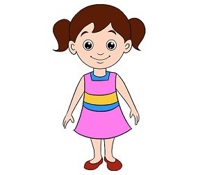
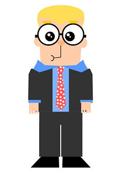

Hi! My name is Oksana. I like literature, English and tea! I also like making complicated things simple. Do you thik I can help you or just want to learn? Explore this site to find out!
My education:
- Bachelor’s degree with honors in Ukrainian Philology: 09.2007 - 06.2011Ivan Franko national University in Lviv, Ukraine
- Master’s degrees in Ukrainian philology: 09.2011- 06.2015 –Ivan Franko national University in Lviv, Ukraine
- PhD study in Literary theory: worked on thesis ‘Silence as a manifestation of an ontological state of human being. (Ukrainian poetry of the second half of the 20th century). Successfully defended the thesis on 29th of May;
My work experience
- English tutor (2010 – present): Private lessons of English and Ukrainian
- Teaching Assistant at Lviv University (09.2014-06.2015): Led seminar groups of around twenty students following lectures on Foreign Literature and Literary Theory
- Assistant of the Head of Academic Pastoral Centre of Ukrainian Greek Catholic church in Kyiv (09. 2015-07.2016): Responsibilities included organizing English speaking clubs, recreational and educational events for young people, and assisting high school and university students in visiting orphanage.
- Teacher of English at language school ‘Azbuka Svitu’(10. 2016- 01.2017): Responsibilities included planning, preparing, and teaching personal and group lessons.
- Teacher of Ukrainian at Lviv Polytechnic National University (01.2017-07. 2017): Responsibilities included teaching Ukrainian grammar, use of professional style of language, writing, and editing.
- Teacher of Ukrainian as a foreign language at Lviv Polytechnic National University (10. 2017 – 06/2018): Teach basics of Ukrainian Language to foreign students using English as a language of instruction.
Oksana is a fun teacher who helps me understand things, not just learn them by heart. We play games and listen to the music. But the most important thing is we talk
Oksana is a responsible teacher. She is strict but understanding. I have really upgraded my speaking skills
Write to me on facebook: https://www.facebook.com/oksana.zahorodniuk

Or contact me via an email: oksana16zahorodniuk@gmail.com;